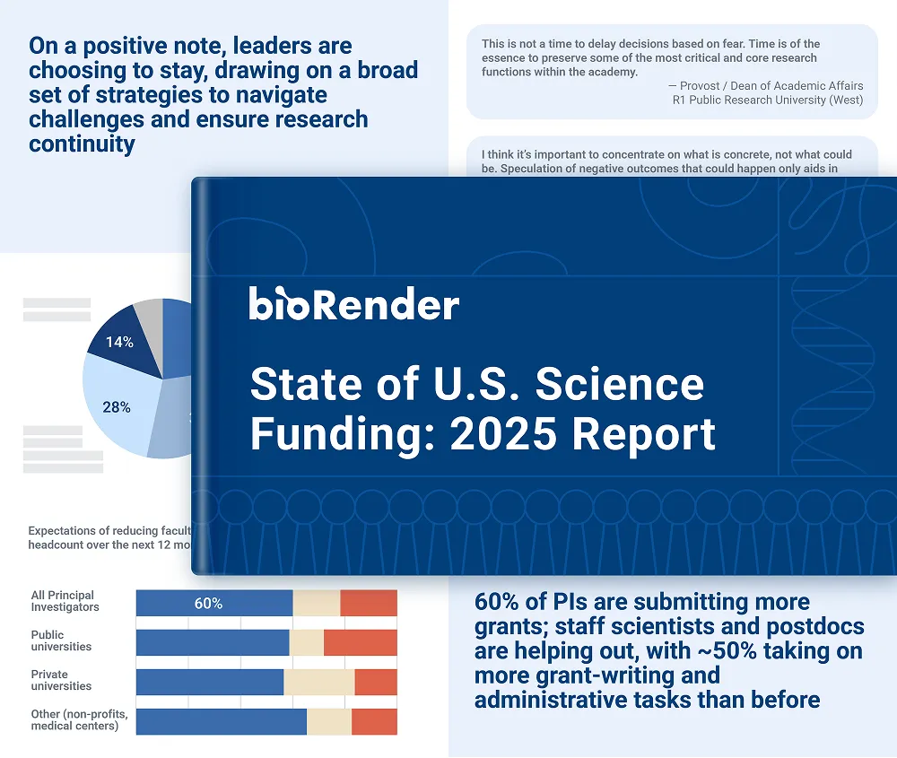
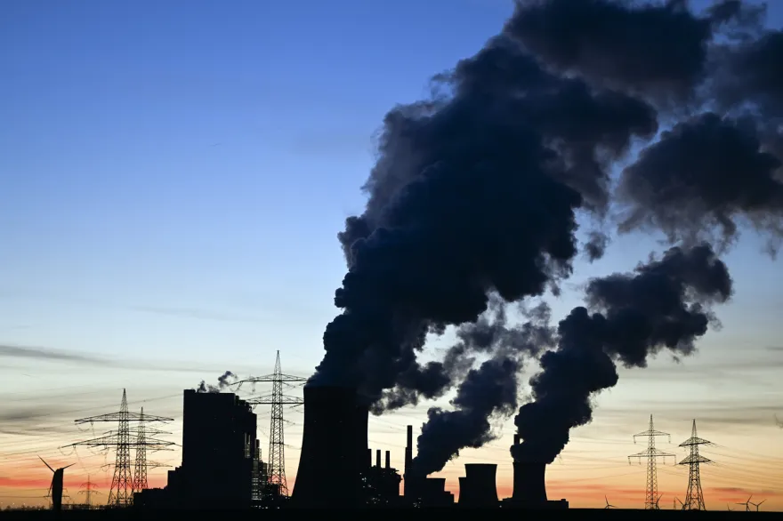

U.S. Expands Subcritical Nuclear Tests as Global Tensions Rise


The United States is expanding its use of subcritical nuclear tests, experiments that study nuclear materials without producing an explosion, as geopolitical tensions with Russia and China continue to grow. The tests, conducted at the Nevada National Security Site, are part of a long-standing U.S. effort to ensure that aging nuclear warheads remain reliable without violating the country’s decades-long moratorium on underground nuclear detonations.
U.S. officials say the increased testing focus reflects concerns over Russia’s moves away from arms-control agreements and China’s rapid expansion of its nuclear program. The National Nuclear Security Administration confirmed that new subcritical experiments were carried out in 2023 and 2024, using updated diagnostic technologies to monitor how plutonium behaves under extreme pressure.
“These experiments help us maintain the safety and effectiveness of the stockpile without returning to explosive testing,” the NNSA said in a public statement, noting that the work complies with the Comprehensive Nuclear-Test-Ban Treaty because it does not produce a self-sustaining chain reaction.
The Biden administration has reiterated that it does not support resuming explosive nuclear testing and will continue relying on advanced modeling, scientific simulations, and subcritical experiments. Officials say these tools are sufficient to evaluate the aging stockpile, but some lawmakers have pushed for expanded testing capabilities in response to China’s rapid
Experts say that the arms control framework is being weakened by modern nuclear powers.
Experts in arms control say that the US's continued use of computer simulations and subcritical testing to keep its old nuclear weapons up to date is making the world less stable. People are worried that the long-standing ban on nuclear testing may be in danger because China is building nuclear plants and Russia decided to take back its ratification of the Comprehensive Nuclear-Test-Ban Treaty (CTBT) in 2023.
According to experts on nonproliferation, the US is now negotiating in a less stable environment than it has been since the Cold War ended. Analysts say that it is harder to keep things stable over time when major enemies don't sign agreements. Washington has said again that it will not test nuclear weapons in the meantime.
The U.S. stockpile stewardship program still uses advanced modeling, scientific diagnosis, and testing that doesn't use explosives. Officials say that this method gets rid of the need for a lot of testing and keeps nuclear reliability at a high level.


Koepka’s Leap of Faith: What Comes Next After LIV Golf Exit
DECEMBER 24, 2025

Skenes and Skubal Win Cy Young Awards as Future Uncertainty Grows
NOVEMBER 12, 2025


U.S News
U.S. Tightens China Trade Policy as Tariff Review Continues Into 2025
The Biden administration continues its formal review of China tariffs imposed since 2018, with U.S. officials signaling tougher enforcement rather than rollback as tensions persist.
U.S News BY NOVEMBER 3, 2025

Budget Stalemates Strain U.S. Science Agencies
Ongoing budget disputes in Washington are creating staffing challenges and delayed projects at agencies like NASA and the EPA, raising concerns among researchers about long-term scientific capacity.
U.S News BY NOVEMBER 3, 2025

Climate Tech and Geoengineering Face Growing Two-party Backlash
Because lawmakers want more oversight and public responsibility, new climate solutions like carbon removal, solar geoengineering, and atmospheric interventions are facing opposition from both parties.
U.S News BY NOVEMBER 5, 2025